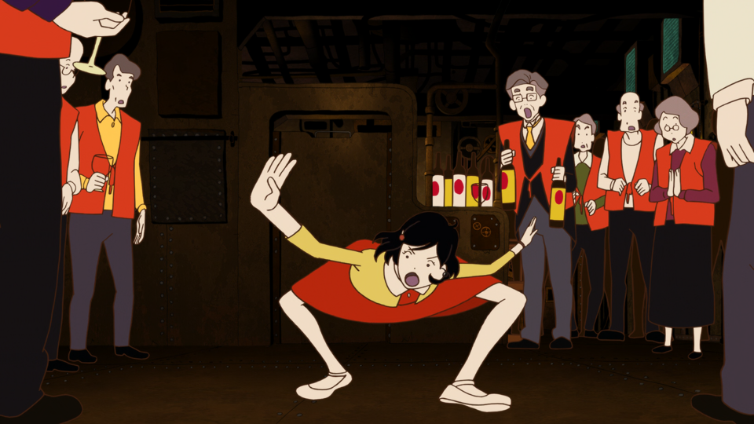
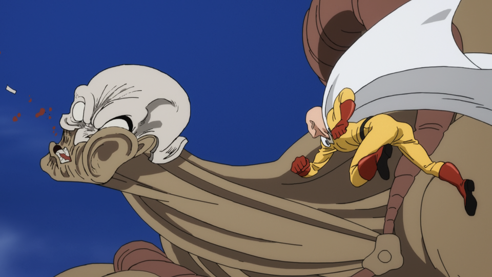

A sampling of content I’ve worked on subtitles for (mostly
anime) and put out into the world. My work is entirely unsanctioned; I
do it because I believe I can provide a superior viewing experience
versus other options, especially official offerings, which will
often fail to meet bare-minimum standards of quality. The things I’ve
seen…
Infinity Train
Trapped on a mysterious train that seems to never end, a
headstrong 12-year-old girl must use her wits to uncover the
train’s many secrets – and hopefully return home.
Somali and the Forest Spirit
This is the story of an unlikely pair: one a member of a ruined
race, the other a watchman of the forest. It tells of their
travels together and of the bond between father and daughter.
The Night is Short, Walk On Girl

As a group of university students go out for a night on the town,
a raven-haired sophomore experiences a series of surreal
encounters with the local nightlife.
Meanwhile, an older schoolmate of hers concocts increasingly
contrived and elaborate “chance encounters” in the hope of getting
her attention, but fate conspires to foil every attempt he makes.
One-Punch Man

After years of training, Saitama has grown so strong that he can
defeat any enemy with ease. This godly strength, however, presents
an unexpected problem: unable to find a worthy opponent, Saitama
has grown bored and struggles to find meaning in the heroism he’d
dreamed of as a child.
Miss Kobayashi’s Dragon Maid
An ordinary hardworking software engineer, Kobayashi sets off for
work one day only to find a dragon at her doorstep. The two had
apparently met the prior night when Kobayashi, thoroughly drunk,
wandered into the mountains, and after learning that Tohru, the
dragon, has no place to call home, extended an offer to work as a
maid in her apartment. Their life together is by no means an
uneventful one, but it’s more ordinary than one might expect.